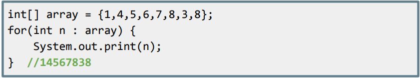
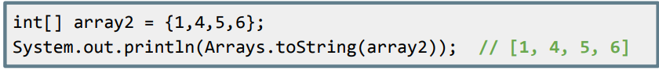
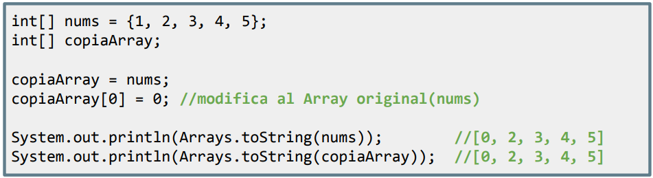
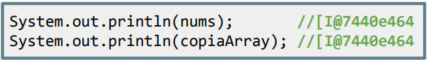
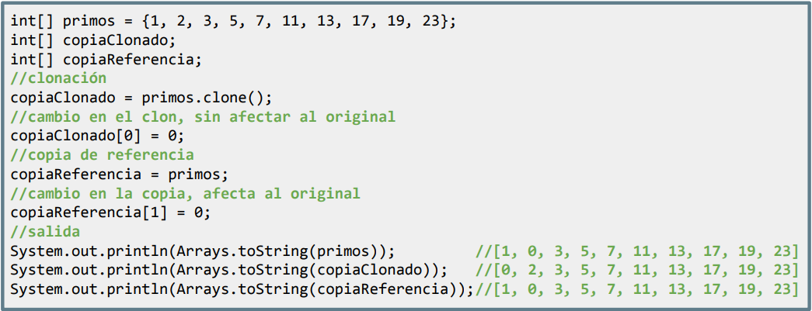
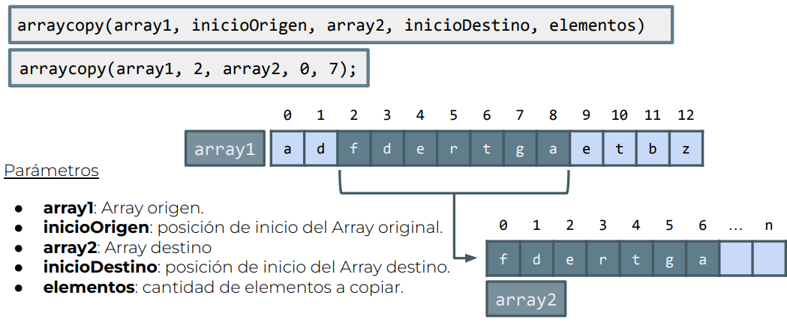
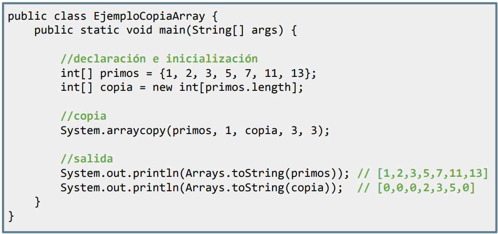

- Recorrer arrays con ForEach
Existen formas alternativas de recorrer un array. Podemos hacerlo de forma abreviada mediante un bucle tipo forEach:

int[] array = {1,4,5,6,7,8,3,8};
for(int n : array) {
System.out.print(n);
} //14567838Este tipo de bucle no necesita condiciones, simplemente irá guardando en la variable de control (n) los valores del array para la posición dada con cada iteración (recorre todas las posiciones disponibles en el array). Así nos ahorramos también calcular el tamaño (length).
- Si lo que queremos hacer es imprimir el contenido de un array, podemos hacerlo así:

int[] array2 = {1,4,5,6};
System.out.println(Arrays.toString(array2)); // [1, 4, 5, 6]De este modo, nos ahorramos escribir un bucle.
- Copia por referencia en arrays
En JAVA, en una variable no primitiva (objeto) se almacena la dirección de dicho objeto en memoria. Los arrays se consideran tipos no primitivos, por lo tanto, esto implica que si hacemos una copia de un array y modificamos alguno de los elementos de la copia, también modificaremos el array original.

int[] nums = {1, 2, 3, 4, 5};
int[] copiaArray;
copiaArray = nums;
copiaArray[0] = 0; //modifica al Array original(nums)
System.out.println(Arrays.toString(nums)); //[0, 2, 3, 4, 5]
System.out.println(Arrays.toString(copiaArray)); //[0, 2, 3, 4, 5]
De hecho, al intentar imprimir el valor de un array, nos muestra su espacio de memoria. Observa que es exactamente el mismo:

System.out.println(nums); //[I@7440e464
System.out.println(copiaArray); //[I@7440e464- Clonado de arrays
Dado el problema visto en el punto anterior, todos los objetos en JAVA tienen el método clone() que realiza una copia exacta del contenido en otro espacio de memoria. Si se utiliza en los arrays, nos permitirá hacer una copia del mismo y de esta forma crear otro array independiente del anterior que ya podremos modificar a nuestro antojo.

int[] primos = {1, 2, 3, 5, 7, 11, 13, 17, 19, 23};
int[] copiaClonado;
int[] copiaReferencia;
//clonación
copiaClonado = primos.clone();
//cambio en el clon, sin afectar al original
copiaClonado[0] = 0;
//copia de referencia
copiaReferencia = primos;
//cambio en la copia, afecta al original
copiaReferencia[1] = 0;
//salida
System.out.println(Arrays.toString(primos)); //[1, 0, 3, 5, 7, 11, 13, 17, 19, 23]
System.out.println(Arrays.toString(copiaClonado)); //[0, 2, 3, 5, 7, 11, 13, 17, 19, 23]
System.out.println(Arrays.toString(copiaReferencia));//[1, 0, 3, 5, 7, 11, 13, 17, 19, 23]- Copiar un array significa pasar los datos de un array a otro (todos o una parte). Existe un método en System que permite copiar elementos de un array a otro:


public class EjemploCopiaArray {
public static void main(String[] args) {
//declaración e inicialización
int[] primos = {1, 2, 3, 5, 7, 11, 13};
int[] copia = new int[primos.length];
//copia
System.arraycopy(primos, 1, copia, 3, 3);
//salida
System.out.println(Arrays.toString(primos)); // [1,2,3,5,7,11,13]
System.out.println(Arrays.toString(copia)); // [0,0,0,2,3,5,0]
}
}